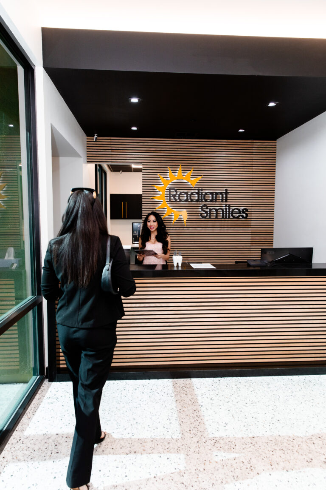

Everyday care.
Exams, cleanings, preventative care, digital X-rays, fluoride and sealants are handled at this address.
Our office on Camino Al Norte, open a full Saturday, with its own direct phone line and online booking.
5195 Camino Al Norte Rd., North Las Vegas, NV 89031 (702) 509-1967
Saturday here runs the same full day as a weekday, 9 AM to 5 PM.
Tuesday and Thursday stay open to 7 PM. So this address offers two weekday evenings and a whole Saturday.
Sunday is closed. Online booking is available at this office.
Exams, cleanings, preventative care, digital X-rays, fluoride and sealants are handled at this address.
Restorations, cosmetic dentistry, and oral and maxillofacial surgery all happen here.
Periodontics and orthodontics are treated at this office rather than sent out.
Ten dentists are named on our team page, with the credentials of each written out. Two of them are fluent in Spanish.
Same-day and emergency appointments are available.

An examination, X-rays where they add something, then a plain account of what we found. New patients can use the published entry offer for that visit.
Our insurance and financing page lists 41 named plans, including Culinary Health Fund, Teachers Health Trust and Nevada Medicaid.
Network status varies by office and by plan, so nothing blanket is promised here. Call us with your plan details first.
Same-day and emergency appointments are available. Call (702) 509-1967 and say that it is urgent.
It is cited on that office's own page, with its platform and its date, and it stays there.

North Las Vegas is one of seven offices Radiant Smiles owns and staffs across Las Vegas, North Las Vegas and Henderson.
One brand, one roster, one domain, not seven separate businesses.
The alternative model in this market is separately owned or separately branded practices under a shared name. A referral out of one of those means a new practice, a new front desk and a new wait.
Book at the North Las Vegas office, or call (702) 509-1967 and reach this office directly.